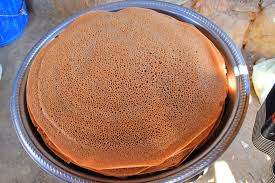

Injera Recipe

Ethiopian traditional flat bread
Injera is not only a kind of bread—it’s also an eating utensil.
In Ethiopia and Eritrea, this spongy, sour flatbread is used to scoop up meat and vegetable stews.
Injera also lines the tray on which the stews are served, soaking up their juices as the meal progresses.
When this edible tablecloth is eaten, the meal is officially over.
Ingredients
- 1/4 cup teff flour
- 3/4 cup all-purpose flour
- 1 cup water
- a pinch of salt
- peanut or vegetable oil
Steps
- Put the teff flour in the bottom of a mixing bowl, and sift in the all-purpose flour.
- Slowly add the water, stirring to avoid lumps.
- Put the batter aside for a day or more (up to three days) to allow it to ferment.
In this time, your injera batter will start to bubble and acquire the slight tanginess for which it’s known.
- Stir in the salt.
- Heat a nonstick pan or lightly oiled cast-iron skillet until a water
drop dances on the surface. Make sure the surface of the pan is smooth: Otherwise, your injera might fall apart when you try to remove it.
- Coat the pan with a thin layer of batter. Injera should be thicker than a crêpe, but not as thick as a traditional pancake.
It will rise slightly when it heats.